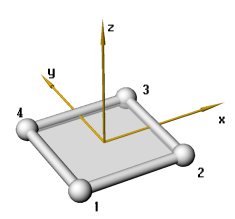
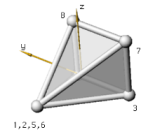
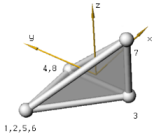
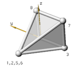
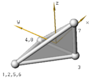

| nr |
Номер елемента - він повинен бути унікальний, тобто ніякий інший елемент не може мати такого номера.
|
| node1,2,.. |

|
Вузли визначені проти годинникової стрілки як вказано на рисунку.
На рисунку визначено також напрямок вісі x,який паралельний прямій визначеної вузлами 1 і 2.
Вісь z є норалью до площини.
Вісь y паралельна прямій, яка визначена вузлами 1 і 4.
|
|
| thickness |
Товщина shell елементу. Товщина постійна по всій ширині елементу.
|
| elmaterial |
Назва матеріалу shell елементу. Це ім'я має бути визначено в блоці матеріалів.
|
| noip |
Кількість інтегрованих точок по товщині елементу. Всі точки від 1 до 5 можливі. Рекомендоване мінімальну кількість точок інтегрування 3.
|
| nopip |
Кількість точок інтегрування, з яких буде записуватися результат у файл. Їх кількість може бути від 1 до NIP (значення, вказане в параметрі NIP), наприклад якщо NIP = 5, PIP становитиме 3.
|
| shearfactor |
Це довільний параметр, що описує зміну товщини елементу, за замовчуванням дорівнює 1.0.
|
| hglass |
Параметр включення і виключення контролю товщини елементу. Може мати два значення ON або OFF. За замовчуванням ON.
|
| mhc |
Коефіцієнти контролю товщини. За замовчуванням 0.1.
|
| oophc |
Коефіцієнти контролю виходу з площини. За замовчуванням 0.1.
|
| rhc |
the Rotational Hourglass Control factor. This factor is
multiplied with the calculated hourglass moments. Default is 0.1.
|
| loadname |
Назва навантаження, яке визначено в блоці навантажень. Даним способом визначається навантаження на елемент.
|
| c_factor |
Контактний фактор. Це зусилля, що виникає при контакті. Сила збільшується лінійно в процесі наближення та впровадження вузла, за замовчуванням дорівнює 10.
|
| c_type |
Тип контакту. Значення OFF вимикає контакт. За замовчуванням використовується тип BASIC, який визначає контакт як два елементи Contact_Triangle (контакт між ними визначається по поверхні). Такий контакт добре працює при малих деформаціях елементу.
Параметр ADVANCED використовується для включення контакту, при якому використовуються чотири елементи Contact_Triangle. При використанні цього параметра збільшується час розрахунку.
Параметр EDGE дозволяє визначати контакт по гранях елемента і краях. Параметр ADVANCED_EDGE поєднує можливості попередніх параметрів.
|
| friction |
Коефіцієнти тертя. Зазвичай використовується в межах 0,2 ... 0,8. Якщо контакту немає, коефіцієнти тертя не вказується.
|
| thinning |
Визначає зміну товщини елементу при великих деформаціях. Його корисно використовувати при моделюванні процесу пресування. За замовчуванням параметр включено (ON). Щоб вимкнути використовується OFF.
|

 


